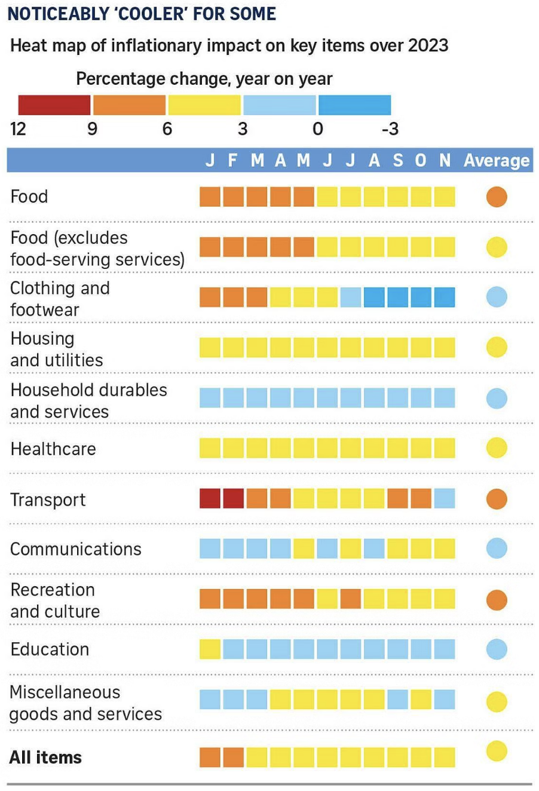

library(tidyverse)
library(ggplot2)
library(RColorBrewer)
library(knitr)Percent Change In Consumer Price Index (CPI) of year 2023
Data Preparation
Introduction
This document contains the data engineering required to reconstruct and improve the plot by Straits times, shown in Figure 1, depicting the inflation rate of prices in Singapore in the year 2023.
The code below requires the following packages:
include_graphics("images/price_index.png")

Read data
Straits Times based their visualization on data by the Department of Statistics Singapore, available in CSV format with each row representing the inflation rate of a specific item for each month starting from the year 1962 to the current year. The relevant columns for the visualization are the Data Series column, which contains the item name, and the columns for each month of the year, showing the inflation rate for the specific month.
# Load the dataset
dataset <- read_csv("M212911.csv", skip = 10)
dataset <- dataset[1:152, ]
dataset# A tibble: 152 × 749
`Data Series` `2024 Apr` `2024 Mar` `2024 Feb` `2024 Jan` `2023 Dec`
<chr> <dbl> <dbl> <dbl> <dbl> <dbl>
1 All Items 2.7 2.7 3.4 2.9 3.7
2 Food 2.8 3 3.8 3.3 3.7
3 Food Excl Food Servin… 0.6 0.9 3.2 2.2 2.5
4 Bread & Cereals 3.5 3.8 4.3 4.8 4.9
5 Rice 2.2 3.7 4 4.3 4.8
6 Flour -0.8 -1.4 1.3 -1.6 6.7
7 Bread 3.8 4.3 5.5 6.7 6.1
8 Noodles & Pasta 0.7 1.5 2 2.6 1.2
9 Biscuits & Cookies 2.5 2 3.9 4.4 1.4
10 Cakes & Pastries 4.5 3.8 3.6 3.7 5.1
# ℹ 142 more rows
# ℹ 743 more variables: `2023 Nov` <dbl>, `2023 Oct` <dbl>, `2023 Sep` <dbl>,
# `2023 Aug` <dbl>, `2023 Jul` <dbl>, `2023 Jun` <dbl>, `2023 May` <dbl>,
# `2023 Apr` <dbl>, `2023 Mar` <dbl>, `2023 Feb` <dbl>, `2023 Jan` <dbl>,
# `2022 Dec` <dbl>, `2022 Nov` <dbl>, `2022 Oct` <dbl>, `2022 Sep` <dbl>,
# `2022 Aug` <dbl>, `2022 Jul` <dbl>, `2022 Jun` <dbl>, `2022 May` <dbl>,
# `2022 Apr` <dbl>, `2022 Mar` <dbl>, `2022 Feb` <dbl>, `2022 Jan` <dbl>, …Preprocess Data
For the data preprocessing stage, we will convert the relevant columns to numeric and filter the data to only include the months from the year 2019 to 2023. In addition, we also filter the item relevant to the data visualisation as depicted in Figure 1.
# Convert relevant columns to numeric
dataset <- dataset |>
mutate(across(matches("^2019|^2020|^2021|^2022|^2023"),
~ as.numeric(as.character(.))))
month_data <- dataset |>
filter(`Data Series` %in% c("Food", "Food Excl Food Serving Services",
"Clothing & Footwear", "Housing & Utilities",
"Household Durables & Services", "Health Care",
"Transport", "Communication",
"Recreation & Culture", "Education",
"Miscellaneous Goods & Services", "All Items")) |>
select(`Data Series`, matches("^2019|^2020|^2021|^2022|^2023"))
month_data# A tibble: 12 × 61
`Data Series` `2023 Dec` `2023 Nov` `2023 Oct` `2023 Sep` `2023 Aug`
<chr> <dbl> <dbl> <dbl> <dbl> <dbl>
1 All Items 3.7 3.6 4.7 4.1 4
2 Food 3.7 4 4.1 4.3 4.8
3 Food Excl Food Servin… 2.5 3.5 3.4 3.5 4.4
4 Clothing & Footwear -1 -0.5 -0.1 -1.7 -0.5
5 Housing & Utilities 3.8 3.8 3.9 3.7 3.8
6 Household Durables & … 1.5 1 1.3 1.5 1.5
7 Health Care 5.1 5.1 5.2 4.5 4.3
8 Transport 3.9 2.8 8.4 6.3 4.8
9 Communication 3.9 4 3.6 3.6 2.2
10 Recreation & Culture 6.3 5.6 5.8 4.3 5.1
11 Education 2.6 2.7 2.7 2.4 2.6
12 Miscellaneous Goods &… 2.3 2.8 3.4 2.6 4.2
# ℹ 55 more variables: `2023 Jul` <dbl>, `2023 Jun` <dbl>, `2023 May` <dbl>,
# `2023 Apr` <dbl>, `2023 Mar` <dbl>, `2023 Feb` <dbl>, `2023 Jan` <dbl>,
# `2022 Dec` <dbl>, `2022 Nov` <dbl>, `2022 Oct` <dbl>, `2022 Sep` <dbl>,
# `2022 Aug` <dbl>, `2022 Jul` <dbl>, `2022 Jun` <dbl>, `2022 May` <dbl>,
# `2022 Apr` <dbl>, `2022 Mar` <dbl>, `2022 Feb` <dbl>, `2022 Jan` <dbl>,
# `2021 Dec` <dbl>, `2021 Nov` <dbl>, `2021 Oct` <dbl>, `2021 Sep` <dbl>,
# `2021 Aug` <dbl>, `2021 Jul` <dbl>, `2021 Jun` <dbl>, `2021 May` <dbl>, …Pivot Longer
Next, we will pivot the data longer to facilitate the generation of the heatmap. We will also calculate the overall average for each data series from 2019 to 2023.
# Pivot longer for heatmap generation
long_data <- month_data |>
pivot_longer(cols = matches("^2019|^2020|^2021|^2022|^2023"),
names_to = "Year_Month", values_to = "Percent_Change") |>
separate(Year_Month, into = c("Year", "Month"), sep = " ") |>
mutate(Year = as.integer(Year),
# Add "Overall_Avg" as the 14th month
Month = factor(Month, levels = c(month.abb, "Overall_Avg")),
Month_Index = as.numeric(factor(Month, levels = c(month.abb,
"Overall_Avg"))),
Year_Month_Index = paste(Year, sprintf("%02d",
Month_Index), sep = "-"))
long_data# A tibble: 720 × 6
`Data Series` Year Month Percent_Change Month_Index Year_Month_Index
<chr> <int> <fct> <dbl> <dbl> <chr>
1 All Items 2023 Dec 3.7 12 2023-12
2 All Items 2023 Nov 3.6 11 2023-11
3 All Items 2023 Oct 4.7 10 2023-10
4 All Items 2023 Sep 4.1 9 2023-09
5 All Items 2023 Aug 4 8 2023-08
6 All Items 2023 Jul 4.1 7 2023-07
7 All Items 2023 Jun 4.5 6 2023-06
8 All Items 2023 May 5.1 5 2023-05
9 All Items 2023 Apr 5.7 4 2023-04
10 All Items 2023 Mar 5.5 3 2023-03
# ℹ 710 more rowsCalculate Overall Averages
For the next step, we will calculate the overall average for each data series from 2019 to 2023. We will also add small gaps before and after the “Overall_Avg” data points to improve the visual separation.
# Calculate the overall average for each data series from 2019 to 2023
overall_averages <- long_data |>
filter(Year >= 2019 & Year <= 2023) |>
group_by(`Data Series`) |>
summarize(Percent_Change = mean(Percent_Change, na.rm = TRUE),
.groups = "drop") |>
mutate(Year = 2023, Month = "Overall_Avg", Month_Index = 14,
Year_Month_Index = "2023-14") # Use month index 14 for "Overall_Avg"
overall_averages# A tibble: 12 × 6
`Data Series` Percent_Change Year Month Month_Index Year_Month_Index
<chr> <dbl> <dbl> <chr> <dbl> <chr>
1 All Items 2.73 2023 Over… 14 2023-14
2 Clothing & Footwear -0.932 2023 Over… 14 2023-14
3 Communication 0.18 2023 Over… 14 2023-14
4 Education 1.57 2023 Over… 14 2023-14
5 Food 3.19 2023 Over… 14 2023-14
6 Food Excl Food Servi… 3.23 2023 Over… 14 2023-14
7 Health Care 1.48 2023 Over… 14 2023-14
8 Household Durables &… 1.29 2023 Over… 14 2023-14
9 Housing & Utilities 1.94 2023 Over… 14 2023-14
10 Miscellaneous Goods … 0.442 2023 Over… 14 2023-14
11 Recreation & Culture 2.15 2023 Over… 14 2023-14
12 Transport 6.35 2023 Over… 14 2023-14 Add Gaps
Next, we will add a small gap before and after the “Overall_Avg” data points to improve the visual separation.
# Add a small gap before and after "Overall_Avg"
gap_data_before_avg <- overall_averages |>
mutate(Month = "Gap", Month_Index = 13, Year_Month_Index = "2023-13",
Percent_Change = NA)
gap_data_after_avg <- overall_averages |>
mutate(Month = "Gap", Month_Index = 15, Year_Month_Index = "2023-15",
Percent_Change = NA)
gap_data_after_avg# A tibble: 12 × 6
`Data Series` Percent_Change Year Month Month_Index Year_Month_Index
<chr> <lgl> <dbl> <chr> <dbl> <chr>
1 All Items NA 2023 Gap 15 2023-15
2 Clothing & Footwear NA 2023 Gap 15 2023-15
3 Communication NA 2023 Gap 15 2023-15
4 Education NA 2023 Gap 15 2023-15
5 Food NA 2023 Gap 15 2023-15
6 Food Excl Food Servi… NA 2023 Gap 15 2023-15
7 Health Care NA 2023 Gap 15 2023-15
8 Household Durables &… NA 2023 Gap 15 2023-15
9 Housing & Utilities NA 2023 Gap 15 2023-15
10 Miscellaneous Goods … NA 2023 Gap 15 2023-15
11 Recreation & Culture NA 2023 Gap 15 2023-15
12 Transport NA 2023 Gap 15 2023-15 Color Scale
Next, we will define a custom color scale for the heatmap based on the percentage change values. The color scale will be based on the RdYlBu palette with 9 colors in reverse order, and the breaks and labels will be adjusted dynamically based on the data.
# Combine the original data with the overall averages and the gaps
combined_data <- bind_rows(long_data, overall_averages,
gap_data_before_avg, gap_data_after_avg) |>
arrange(Year, Month_Index)
color_scale <- scale_fill_gradientn(
# Use the RdYlBu palette with 9 colors in reverse order
colors = rev(brewer.pal(9, "RdYlBu")),
values = scales::rescale(c(min(combined_data$Percent_Change, na.rm = TRUE),
-3, 0, 3, 6, 9, 12,
max(combined_data$Percent_Change, na.rm = TRUE))),
# Define breakpoints dynamically
limits = c(min(combined_data$Percent_Change, na.rm = TRUE),
max(combined_data$Percent_Change, na.rm = TRUE)),
breaks = seq(floor(min(combined_data$Percent_Change, na.rm = TRUE)),
ceiling(max(combined_data$Percent_Change, na.rm = TRUE)),
by = 3), # Adjust breaks dynamically
labels = as.character(seq(floor(min(combined_data$Percent_Change,
na.rm = TRUE)),
ceiling(max(combined_data$Percent_Change,
na.rm = TRUE)),
by = 3)), # Adjust labels dynamically
na.value = "white" # Set color for NA values
)Adjust Data Series Names
Next, we will adjust the data series names for better readability in the heatmap.
# Adjust the data series names for better readability
combined_data <- combined_data |>
mutate(`Data Series` = case_when(
`Data Series` ==
"Miscellaneous Goods & Services" ~ "Miscellaneous\nGoods & Services",
`Data Series` ==
"Household Durables & Services" ~ "Household Durables\n& Services",
`Data Series` ==
"Food Excl Food Serving Services" ~ "Food Excl Food\nServing Services",
TRUE ~ as.character(`Data Series`)
))
combined_data# A tibble: 756 × 6
`Data Series` Year Month Percent_Change Month_Index Year_Month_Index
<chr> <dbl> <chr> <dbl> <dbl> <chr>
1 "All Items" 2019 Jan 0.4 1 2019-01
2 "Food" 2019 Jan 1.6 1 2019-01
3 "Food Excl Food\nSer… 2019 Jan 1.3 1 2019-01
4 "Clothing & Footwear" 2019 Jan 3.1 1 2019-01
5 "Housing & Utilities" 2019 Jan -0.6 1 2019-01
6 "Household Durables\… 2019 Jan 0.8 1 2019-01
7 "Health Care" 2019 Jan 2 1 2019-01
8 "Transport" 2019 Jan -2.2 1 2019-01
9 "Communication" 2019 Jan -2.3 1 2019-01
10 "Recreation & Cultur… 2019 Jan 1 1 2019-01
# ℹ 746 more rowsGenerate x-axis breaks and labels
We will generate the x-axis breaks and labels to include January, July, and “Overall_Avg” for each year to improve on the visibility of the heatmap.
# Generate the x-axis breaks and labels to include January, July, and
# "Overall_Avg" for each year
x_breaks <- combined_data |>
filter(Month %in% c("Jan", "Jul", "Overall_Avg", "Gap")) |>
mutate(Year_Month_Index = paste(Year, sprintf("%02d", Month_Index),
sep = "-")) |>
distinct(Year_Month_Index, .keep_all = TRUE) |>
arrange(Year, Month_Index) |>
pull(Year_Month_Index)
x_labels <- combined_data |>
filter(Month %in% c("Jan", "Jul", "Overall_Avg", "Gap")) |>
mutate(Year_Month_Index = paste(Year, sprintf("%02d", Month_Index),
sep = "-")) |>
distinct(Year_Month_Index, .keep_all = TRUE) |>
arrange(Year, Month_Index) |>
mutate(Label = case_when(
Month == "Overall_Avg" ~ paste("Overall Avg"),
Month == "Gap" ~ "",
Month == "Jan" ~ paste("Jan", Year),
Month == "Jul" ~ paste("Jul", Year),
TRUE ~ month.abb[Month_Index]
)) |>
pull(Label)